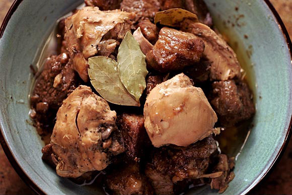

Adobong Manok

Ingredients
- Chicken, cut into serving pieces -- 2 1/2 to 3 pound
- White vinegar
- Soy sauce
- Onion, thinly sliced
- Garlic, crushed
- Bay leaf
- Peppercorns
- Water
- Oil
Steps
- Add the chicken pieces, vinegar, soy sauce, onion, garlic, bay leaf, peppercorns and salt to a large, non-reactive bowl and refrigerate for anywhere from one to four hours to marinate.
- Place the chicken and its marinade in a large pot. Add the water and bring to a boil over medium-high heat.
- Reduce heat to low and simmer for 30 to 45 minutes, or until the chicken is cooked through and tender.
- Add water as necessary to keep the chicken from drying out.
- Remove the chicken from its sauce, reserving the sauce, and pat dry.
- Heat the oil in a skillet over medium-high flame and saute the chicken pieces to brown them.
- Remove from heat and set aside.
- Bring the remaining sauce to a boil over medium flame and cook until somewhat reduced and thickened.
- Toss the browned chicken pieces with the reduced sauce and serve with rice.